<div style="width: 100%;" class="scrolling-columns">
<div id="infographic">

<div>
<p class="bubble" style="margin-top: 20px;">
My research takes the position that listeners are sensitive to patterns of covariation in speech &mdash;that knowing these subtle patterns is part of what it means to truly know a language.
</p>


</div>

<div class="rectangle-border inverted-text" style="border-color: #0B486B; background:#0B486B;">
When we speak we communicate not only our ideas, but also our identities...
</div>

<div style="position: relative;">

<p class="rectangle-border" style="float: left; width: 280px; margin-top: -30px; margin-left: 50px;">
    Which is great because if people sound the way
    we expect them to, we're able to understand them better
    (<a href="http://las.sagepub.com/content/early/2015/02/03/0023830914565191.abstract">McGowan, 2015</a>; <a href="LSA2012.svg" target="_blank">2012 LSA presentation</a>)
</p>

    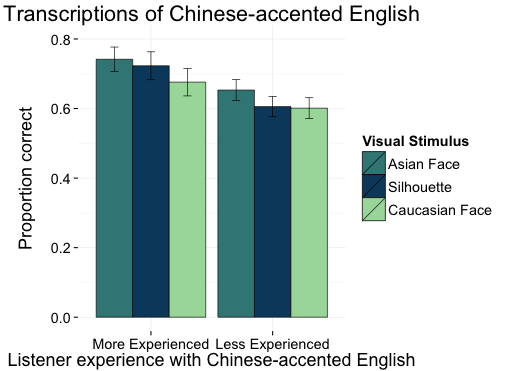

    
    
    
</div>

<div style="clear: both;">
<p class="rectangle-border" style="float: right; width: 375px; border-color: #3B8686; clear: both;">
    even if our expectations are based on stereotypes rather
    than authentic experience (McGowan, in press).
</p>

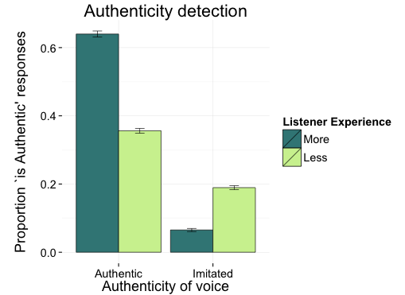
</div>

<div style="clear: both;">
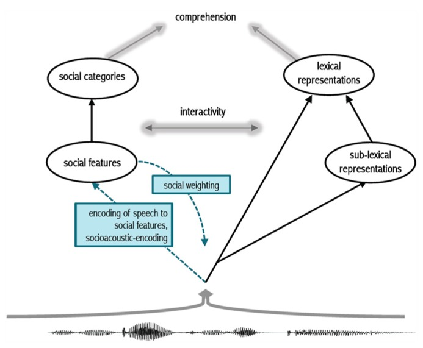
</div>

<div class="rectangle-border inverted-text" style="border-color: #0B486B; background:#0B486B;">
In <a href="http://journal.frontiersin.org/Journal/10.3389/fpsyg.2013.01015/abstract">Sumner, Kim, King, and McGowan (2014)</a> we propose a model (above) of how the linguistic and the social aspects of speech interact to support perception.  We propose that listeners process both phonetically cued social information and phonetically cued linguistic information prior to word recognition and that these dual routes can interact.
</div>

<!--
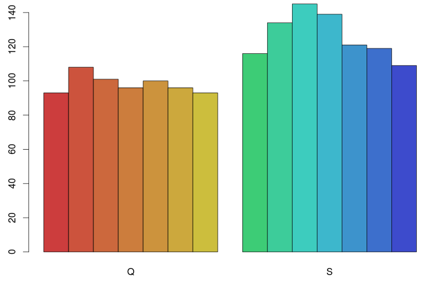
<p class="rectangle-border" style="float: right; width: 400px;">
For example, when we told Bolivian listeners to expect Quechua-accented Spanish, they perceived vowels less distinctly than if they were told to anticipate a Spanish accent (<a href="">McGowan and Babel, in&nbsp;prep</a>)
</p>

<p class="rectangle-border" style="float: left; width: 375px; border-color: #3B8686;">
    This suggests that <b>listeners have detailed knowledge of phonetically-cued
    social information</b>  &mdash;so expecting the variation
    consistent with a particular social category can aid or alter speech
    perception and word recognition.
</p>

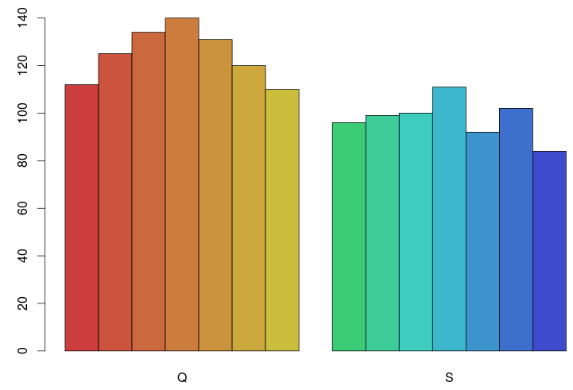
<p class="rectangle-border inverted-text" style="float: right; width: 400px; border-color: darkorange; background: darkorange; margin-top: -10px;" >
Note that <em>knowledge</em> is not the same thing as <em>awareness</em>. We told listeners they'd changed speakers (from Quechua to Spanish or vice versa) and while they gave every indication of believing the switch their lower level perceptual behavior stayed the same!
</p>
-->

<div>
<blockquote style="float:right; width: 300px; margin-left: 30px; text-align: center;" class="rightbubble">
    So does all this knowledge and sensitivity only apply to social variation?
</blockquote>

</div>

<p class="rectangle-border" style="border-color: #cccccc; margin-bottom: -10px; clear: both;">
First, some quick background on how sounds like [p], [t], and [k] differ from sounds like [b], [d], and [g] at the beginning of English words like <em>pit</em> and <em>bit</em>.  What word is this native American English speaker saying?
<br />

<audio controls style="margin-top: 20px; margin-left: auto; margin-right: auto; clear: both;">
  <source src="images/pit-noAspiration.wav" type="audio/wav">
  <source src="images/pit-noAspiration.mp3" type="audio/mp3">
    Your browser does not support the audio element.
</audio> 
</p>

<div style="position: relative;">
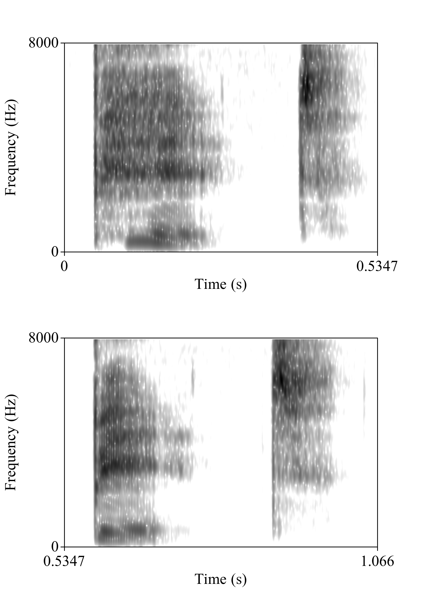

<span style="width: 480px; position: absolute; top: 60px; left: 460px; float: left;">
The image to the left is a spectrogram (frequency analysis over time) of the word <em>pit</em>. Hear the puff of air at the beginning? It is highlighted in blue in the spectrogram.

<audio controls style="margin-top: 20px; display: inline; float: left;">
  <source src="images/pit.wav" type="audio/wav">
  <source src="images/pit.mp3" type="audio/mp3">
    Your browser does not support the audio element.
</audio> 
</span>

<span style="width: 480px; position: absolute; top: 360px; left: 460px; float: left;">
<em>pit</em> and <em>bit</em> both start with the lips completely closed.  One of the main differences between them is the duration of the puff of air, this duration is called VOT (voice onset time).

<audio controls style="margin-top: 20px; display: inline; float: left;">
  <source src="images/bit.wav" type="audio/wav">
  <source src="images/bit.mp3" type="audio/mp3">
    Your browser does not support the audio element.
</audio> 
</span>

<span class="inverted text" style="height: 240px; width: 33px; background: #0B486B; opacity:0.25; z-index: 2; padding: 0; float: left; position: absolute; left: 116px; top: 50px;"> &nbsp; </span>
<h3 style="font: normal 24px Voces; display: inline; position: absolute; top: 70px; left: 0px;">[pʰɪt] </h3>
<h3 style="font: normal 24px Voces; display: inline; position: absolute; top: 370px; left: 0px;">[bɪt] </h3>
</div>

<p class="rectangle-border" style="border-color: #cccccc; margin-bottom: -10px;">
At least in American English, that puff of air is so important that cutting it out of <em>pit</em> (that first sound you played) results in a word that sounds a lot like <em>bit</em> &mdash;though probably with a funny [b], and that funniness is every bit as interesting and important as the change from [p] to [b]!
</p>


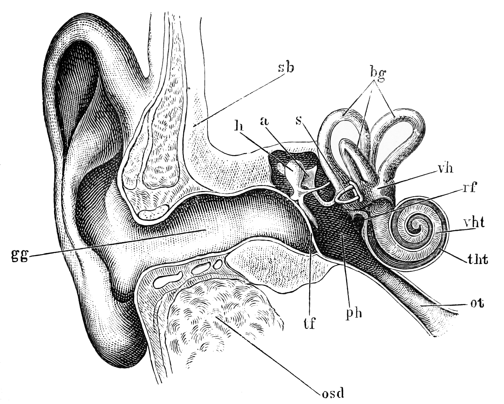

<div class="rectangle-border" style="border-color: #A8DBA8; background:#A8DBA8; width: 50%; float: right; margin-top: 100px; margin-bottom: 100px;">
When we listen to speech we are phenomenally sensitive to covarying patterns
of phonetic detail.  One such covarying pattern is the tendency for VOT
to be shorter in a fast speech style than in slower speech...
</div>


<p class="rectangle-border" style="float: left; width: 375px; border-color: #3B8686; clear: both;">
    In fact, removing most of the VOT from [p], [t], and [k] words makes them
    less useful to listeners (shortest green bar) in slow (Citation) speech, <em>but</em>
    if the rest of the word is spoken quickly the short VOT sounds fine (Fast speech, on the right) (<a href="">abstract</a>).
</p>
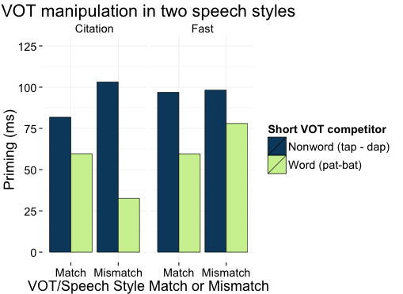

<blockquote style="width: 450px; margin-left: auto; margin-right: auto; text-align: center; margin-bottom: -50px; clear: both;" class="bubble">
Okay, but slower, more careful speech <b>must</b> be easier to understand than faster, more casual speech?
</blockquote>


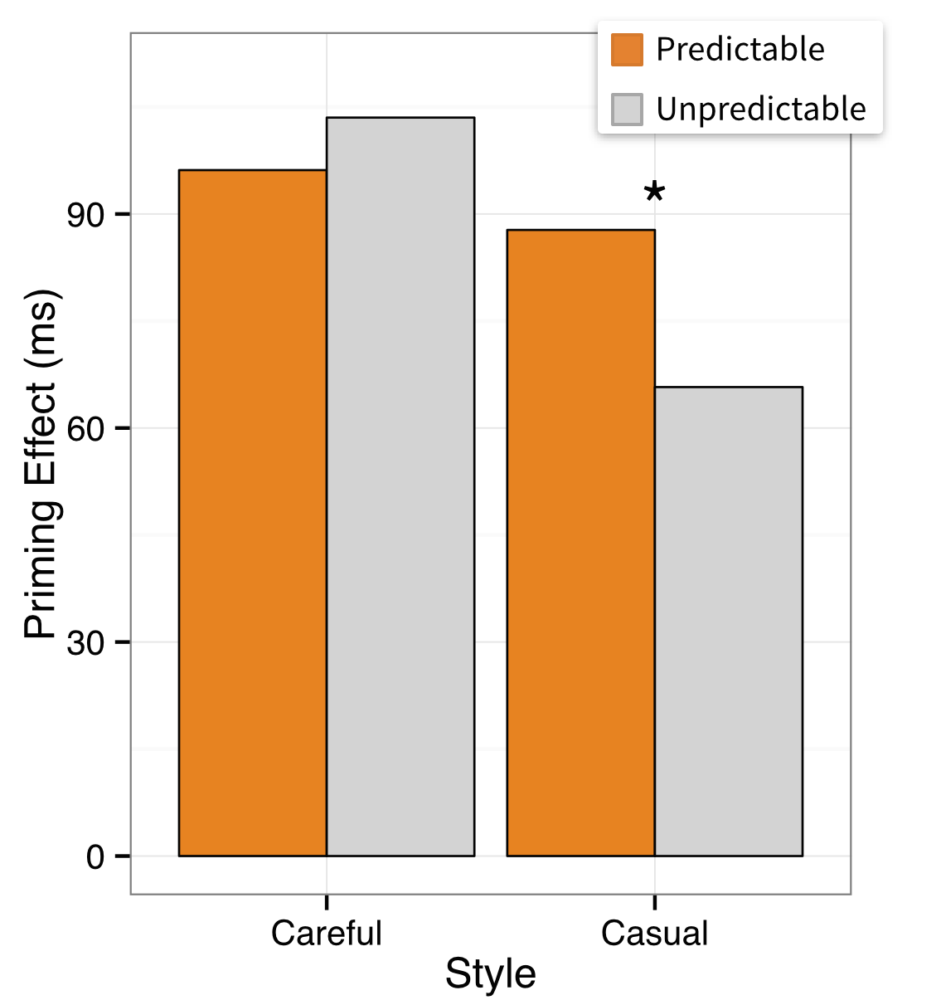
<div class="rectangle-border" style="float: right; width: 375px; position: relative; border-color: #3B8686;">
    <p>Well.. no!  When we tested how well careful and casual speech styles
    activate meanings for listeners in a sentence like "Elephants are
    big animals". We found that casual speech was actually <em>more</em>
    helpful than careful speech.  (<a href="">CUNY 2014 presentation</a>).
    </p>
    <p>
    We also found this with eye tracking...
    </p>
</div>

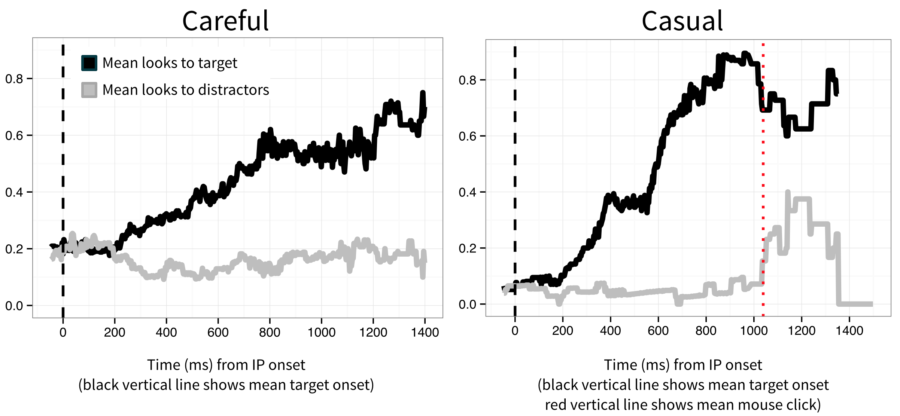

<p class="rectangle-border" >
    When hearing sentences with predictable final words, listeners were able to look at the intended picture more quickly with casual speech than with careful speech.  This and other evidence supports the hypotheses of <a href="http://www.glottopedia.org/index.php/H-and-H_model">Lindblom (1990)</a> and <a href="http://scitation.aip.org/content/asa/journal/jasa/134/1/10.1121/1.4807432?ver=pdfcov">Sumner (2013)</a> that casual speech is processed using more world and contextual knowledge than careful speech.
</p>

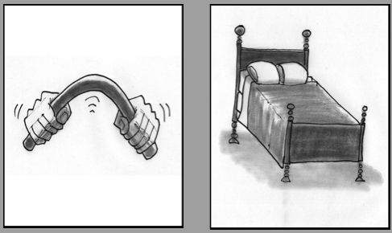

<p class="rectangle-border" style="float: left; width: 350px; border-color: #3B8686;">
    Another covarying feature is the way vowels before nasal consonants in English tend to be nasalized.  Listeners can use this as soon as it becomes available, not only a large distinction like <em>bend</em>/<em>bed</em>...

<audio controls styl="width:100px; float: left;">
  <source src="BeddorEtAl2013/splices/bend-20-80.wav " type="audio/wav">
    Your browser does not support the audio element.
</audio> 

<audio controls styl="width:100px; float: left;">
  <source src="BeddorEtAl2013/splices/bed.wav " type="audio/wav">
    Your browser does not support the audio element.
</audio> 
</p>

<p class="oval-border" style="margin-left: 80px; width: 460px; border-color: #0B486B; float: left; text-align: center; margin-top: -150px; z-index: 5;">
but also a much more subtle distinction like the difference in nasalization between these two sound files.  Can you hear a difference?
</p>

<div style="position: relative; clear: both;">

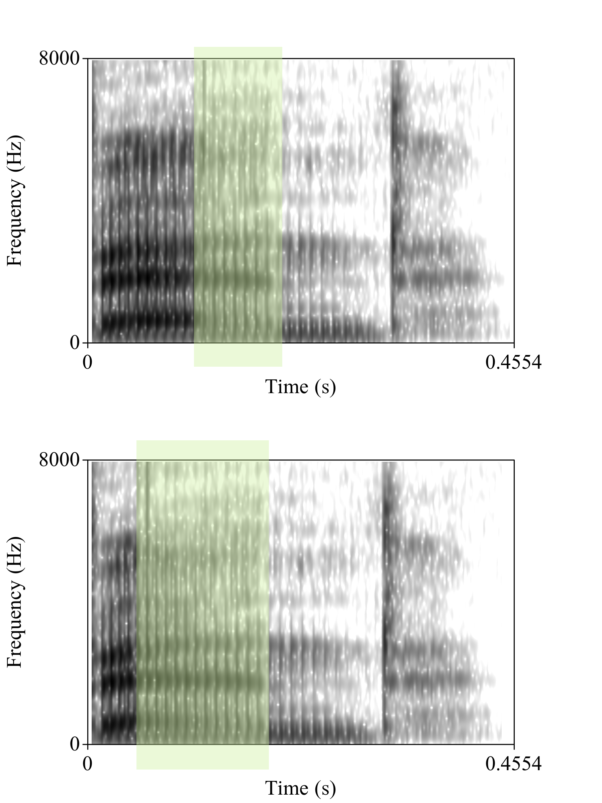 

<span style="position: absolute; top: 70px; left: 50px; width: 400px; float: left;">
This first recording has <b>late nasalization</b> starting 100 miliseconds after the [b].

<audio controls style="margin-top: 20px; display: inline; float: left;">
  <source src="BeddorEtAl2013/splices/bend-60-40.wav " type="audio/wav">
    Your browser does not support the audio element.
</audio> 
</span>

<span style="position: absolute; top: 370px; left: 50px; width: 400px; float: left;">
This second recording has <b>early nasalization</b> starting 33 miliseconds after the [b].

<audio controls style="margin-top: 20px; display: inline; float: left;">
  <source src="BeddorEtAl2013/splices/bend-20-80.wav " type="audio/wav">
    Your browser does not support the audio element.
</audio> 
</span>

<div style="clear: both;">
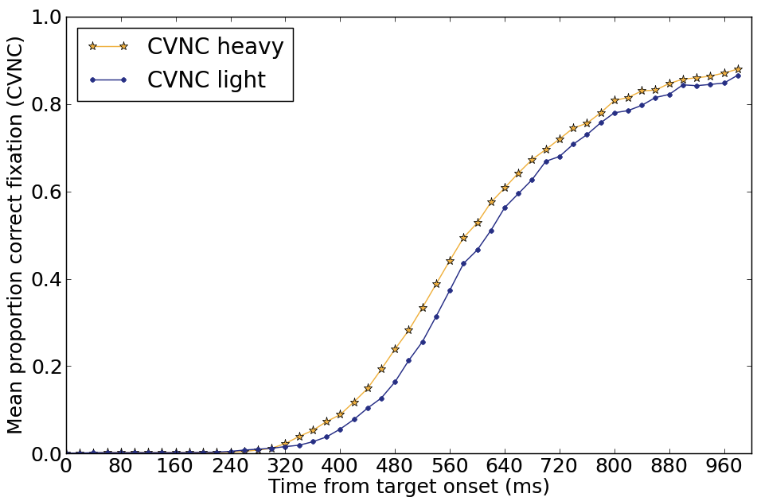
<p class="rectangle-border" style="float: left; width: 265px; margin-top: -30px; margin-left: 0px; ">
    In an eye tracking task we found that listeners can use nasalization as soon as it is present.  Looks to the heavily-nasalized word were, on average, 60 ms faster &mdash;the same average difference between early and late nasalization in the recordings (<a href="http://scitation.aip.org/content/asa/journal/jasa/133/4/10.1121/1.4794366">Beddor, McGowan, Boland, Coetzee, and Brasher, 2013)</a>.
</p>

</div>

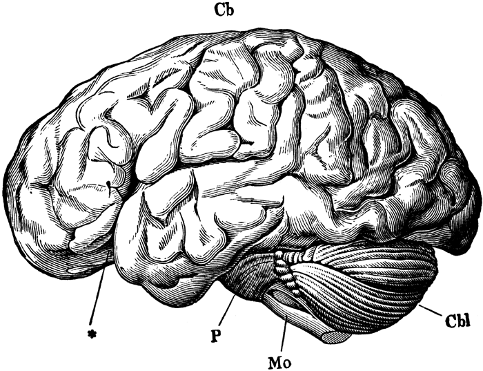
<p class="rectangle-border" style="width: 450px; float: left; border-color: #3B8686;">
    Whether the information is social, contextual, articulatory, or
    idiosyncratic, we humans have an astonishing ability to attend
    to it, remember it, and activate it during perception. This ability, my
    research suggests, is not irrelevant to linguistic competence or
    even peripheral to it, it is fundamentally and centrally part of
    what it means to know and speak a human language.
</p>

<p class="bubble" style="width: 765px; height: 140px; clear: both; margin-left: auto; margin-right: auto;">

Thank you for reading!  If you have any questions, please contact me via e-mail, twitter, or carrier pigeon. <br />

And many, many thanks to my friend Markus Nee for turning me into this cartoon.<br/>
</p>

</div>

</div> <!-- end columns -->
</div> <!-- end scrolly -->

